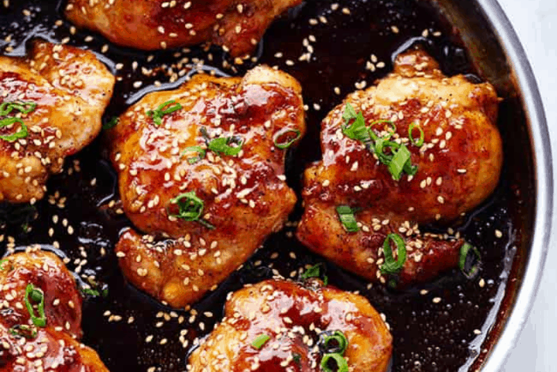

Crispy Sesame Chicken with a Sticky Asian Sauce

Description
Crispy Sesame Chicken with a Sticky Asian Sauce - tastier than that naughty takeaway and super simple to make. Sweet, salty, crispy, sticky and a little bit spicy.
Ingredients
For the Chicken:
- 500g boneless, skinless chicken thighs, cut into bite-sized pieces
- Salt and pepper, to taste
- 2 teaspoons soy sauce
- 2 teaspoons sesame oil
- 1/2 cup cornstarch
- 2 eggs, beaten
- Oil, for frying
- Sesame seeds, for garnish
- Thinly sliced green onions, for garnish
For the Sticky Asian Sauce:
- 1 tablespoon oil
- 2 cloves garlic, minced
- 1 tablespoon ginger, minced
- 5 tablespoons soy sauce
- 2 tablespoons water
- 2 tablespoons rice vinegar
- 1/4 cup honey
- 2 tablespoons brown sugar
- 1 tablespoon cornstarch, mixed with 2 tablespoons water
- 1 teaspoon sesame oil
- 1 teaspoon chili flakes (optional, adjust to taste)
Steps
- Season the chicken pieces with salt and pepper, then marinate with 2 teaspoons of soy sauce and 2 teaspoons of sesame oil. Let it sit for at least 15 minutes.
- In a bowl, mix the cornstarch and eggs together until well combined. Add the marinated chicken pieces and toss to coat evenly.
- Heat oil in a large frying pan or a wok over medium-high heat. Add the chicken pieces in batches, being careful not to overcrowd the pan. Fry until they are golden brown and crispy, about 3-4 minutes per side. Remove the chicken and set aside on a paper towel-lined plate to drain excess oil.
- To make the sauce, heat 1 tablespoon of oil in a saucepan over medium heat. Add the minced garlic and ginger, and sauté until fragrant, about 1-2 minutes.
- Add the soy sauce, water, rice vinegar, honey, and brown sugar to the saucepan. Stir well and bring the mixture to a simmer.
- Mix 1 tablespoon of cornstarch with 2 tablespoons of water in a small bowl until smooth. Pour this mixture into the saucepan, stirring constantly, until the sauce thickens, about 2-3 minutes.
- Stir in the sesame oil and chili flakes (if using) into the sauce. Taste and adjust seasoning if necessary.
- Add the fried chicken pieces back into the pan with the sauce. Toss well to ensure each piece is evenly coated with the sauce.
- Transfer the chicken to a serving dish. Garnish with sesame seeds and thinly sliced green onions.
- Serve immediately with rice or your favorite side dish. Enjoy your Crispy Sesame Chicken with Sticky Asian Sauce!